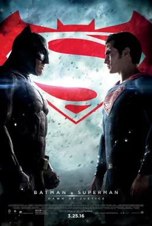

The genetics
Genetics plays a limited but decisive role, in the final act. Lex Luthor, a technology magnate obsessed with destroying Superman, uses the Kryptonian ship and General Zod's body to create a monster genetically engineered from Zod's DNA combined with his own; the creature, which Luthor calls Superman's "doomsday", ends up killing Superman. Luthor is the archetype of the corporate scientist-villain: brilliant, unaccountable and willing to use alien biology as a weapon, having manipulated government officials to obtain it. The film raises the question of how humanity should respond to beings more powerful than itself, and Luthor's creature is his answer, an engineered weapon that cannot be controlled. Genetics is used as a superhero device and the film makes no attempt at plausibility: no technology can combine the genomes of two individuals, let alone of different species, into a functioning adult creature. The creature corresponds to Doomsday, a character from the comics, although it is not named on screen.
How genetics is portrayed
- Overall portrayal of genetics
- negative Genetic engineering appears as a corporate villain's forbidden weapon that kills the hero; the film presents it only as an uncontrollable instrument of destruction.
- Outcome of the genetic intervention
- negative The engineered monster cannot be controlled, survives a nuclear strike, ravages the city and kills Superman before it is destroyed.
- Lex Luthor (LexCorp)
- villain Aim: malevolent, power (negative). Obsessed with destroying Superman, the LexCorp CEO manipulates officials to obtain Zod's corpse and the Kryptonian ship, then ignores the ship's warning against genetic modification and combines Zod's body with his own blood to create Doomsday; the film stages him as a vengeful narcissist and ends with him in prison.
The story
Eighteen months after Superman's destructive battle with General Zod in Metropolis, he has become a controversial figure. Bruce Wayne, who has fought crime in Gotham as Batman for twenty years, sees him as a threat to humanity, while Clark Kent condemns Batman's brutality. The industrialist Lex Luthor seeks permission to import kryptonite as a deterrent and, through a senator's subordinate, gains access to Zod's corpse and the Kryptonian scout ship. Luthor bombs a congressional hearing on Superman, steers Batman's paranoia and kidnaps Superman's adoptive mother, Martha, to force him to fight Batman. Batman defeats Superman with kryptonite but spares him on learning that their mothers share a name, and rescues Martha. Luthor then unleashes a monster engineered from Zod's DNA and his own. Batman, Superman and Wonder Woman fight it; Superman kills it with a kryptonite spear but is mortally wounded. After Superman's funeral, Bruce and Diana plan to gather a team of metahumans.